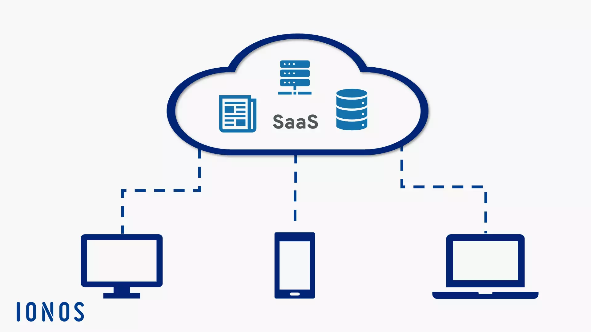
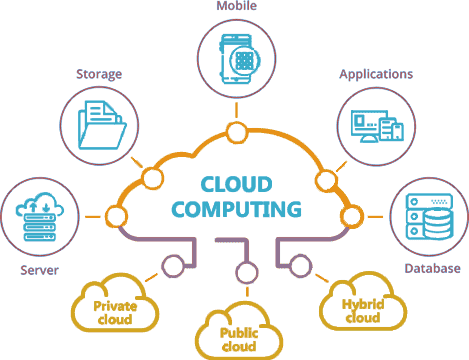
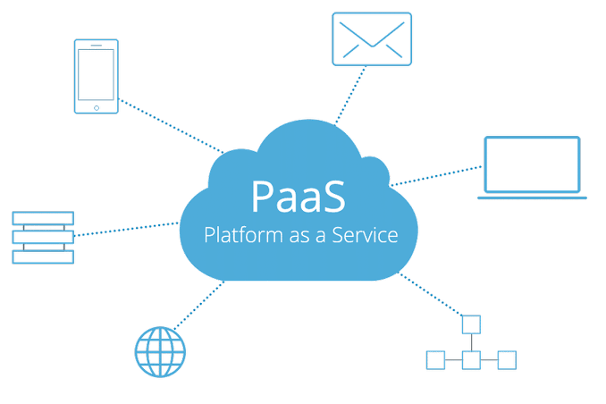
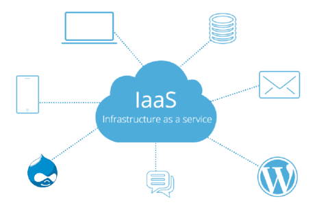
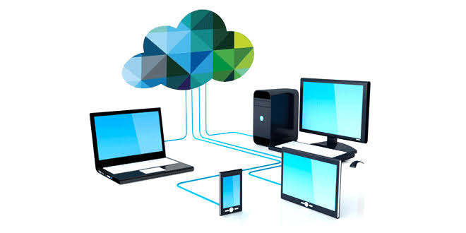

SaaS
Software como servicio. Permite utilizar programas desde Internet sin tener que instalarlos ni administrar los servidores. Ejemplos: Gmail, Microsoft 365 y herramientas de videoconferencia.
Cloud Computing o computación en la nube es una forma de utilizar recursos tecnológicos, como servidores, almacenamiento, bases de datos y programas, a través de Internet. En lugar de tener toda la infraestructura en el equipo propio, se accede a servicios alojados en servidores de un proveedor.
Esto permite utilizar recursos cuando se necesitan, acceder desde distintos lugares y aumentar o reducir la capacidad según el trabajo.


Software como servicio. Permite utilizar programas desde Internet sin tener que instalarlos ni administrar los servidores. Ejemplos: Gmail, Microsoft 365 y herramientas de videoconferencia.

Plataforma como servicio. Ofrece un entorno preparado para desarrollar, probar y publicar aplicaciones. El proveedor administra la infraestructura y el desarrollador se concentra en el programa.

Infraestructura como servicio. Proporciona recursos virtuales como máquinas virtuales, redes y almacenamiento. El usuario puede instalar y configurar el sistema operativo y sus aplicaciones.

Es una tecnología que permite crear versiones virtuales de recursos informáticos, como servidores, sistemas operativos o redes. Así, un mismo equipo físico puede ejecutar varias máquinas virtuales de forma independiente.

Es una plataforma que permite empaquetar una aplicación con sus dependencias dentro de contenedores. Esto facilita ejecutarla de manera similar en diferentes equipos y entornos.